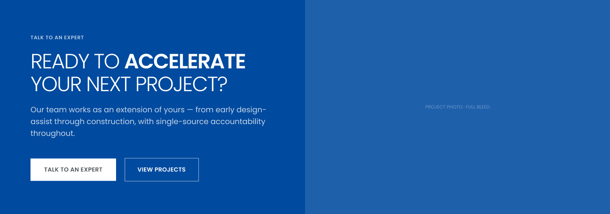
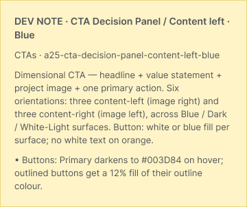
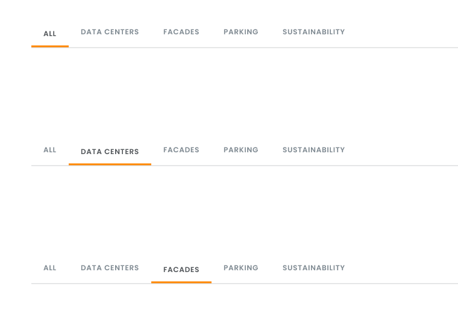

The 45 new section components are already in your Clark Pacific file and published in its library. There's nothing to copy or paste. Your pages and your existing components haven't changed; the components have moved into a tidier layout on the Components page. This guide shows where they are and how to use them.
About 10 minutes to readNothing to install45 components · 11 clickable
What changed since the first version of this guide
No copying. The separate Clark Pacific 2.5 Additions file is retired. Don't copy from it; its components are older than the ones in your file.
Editable text. Change headings, labels and links from the right-hand panel.
Clickable. Filters, tabs, carousels, galleries and the accordion work in Present mode.
01
Find them
Open the 02 · Components page. It now has two rows. The top row is your existing library, in order from 00 · Primitives to 08 · Forms. The second row holds the new components in eight sections whose names start with 2.5 ·. Each component has a yellow dev note beside it for your developers.
TOP ROW · YOUR EXISTING LIBRARY
00 · Primitives
01 · Global
02 · Heroes
03 · Content Panels
04 · CTAs & Buttons
05 · Cards & Grids
06 · Data & Company
07 · Product Detail & Media
08 · Forms
SECOND ROW · NEW IN 2.5
2.5 · Content Panels 3
2.5 · Cards & Grids 8
2.5 · CTAs 10
2.5 · Data Display 2
2.5 · Company Pages 6
2.5 · Insights 3
2.5 · Product Pages 7
2.5 · Projects 6
To jump to a section, click its name in the Layers panel, then press ⇧ 2 to zoom to it. The full list of what's in each section is at the end of this guide.
❖ 2.5 / CTA Decision Panel / Content left · Blue


In the 2.5 · CTAs section: a component (purple outline) with its yellow dev note on the right.
02
Put one on a page
Open the desktop page you want to change. In the left panel, click Assets and type 2.5 in the search. Drag the one you want onto the page and drop it on the blue line that appears between two sections.
LayersAssets
2.5
▾ 2.5
▸ CTA Decision Panel 6
▸ Carousel 3
▸ Icon Module 3
▸ Projects 7
Split Content
Stats Row
CTA Banner
↑ Drop on the blue line
Replacing a section you've already edited? Right-click → Swap instance replaces it, but text you've typed into the old section won't come along. Drag the new one in beside it instead, copy your text across, then delete the old one.
Using the library in another file? Open that file's Assets panel and accept the library update when Figma asks. The new components then appear under 2.5.
03
Change the text
Select the section on your page. The right-hand panel lists its text as fields, named by position and role: Heading, Body, Card 2 · Title, Card 2 · Badge, Tab 3 · Label and so on. Click a field and type. Button labels show up underneath, under the button's own name.
◇ Project card gridDesign
Card 1 · BadgeParkingCard 1 · TitleUC Davis Health Parking…Card 1 · LabelHealthcare · NorCalCard 1 · LinkView ProjectCard 2 · BadgeBuilding EnvelopeCard 2 · TitleThe Grand LA
Big two-weight headlines (light words with a bold keyword, like "OPEN POSITIONS") aren't in the panel, because a field would flatten the bold keyword. Double-click the headline on the canvas and type over it. Keep the keyword as the last words; don't change the weight by hand.
Text that changes with a state, like "Showing 9 projects" or a carousel's slide copy, is also edited on the canvas.
04
The clickable ones
Eleven components behave like the real site. Each one has a property in the right-hand panel that picks what it shows: which tab is active, which slide, which section is open. Pick the state a page should show by default. To click through them, press Present (▶ at the top right).

◇ Filter bar
TabFacades ▾
2.5 / Insights / Filter bar: one state per tab. Pick one in the right panel, or click the tabs in Present mode.
Component
Property
What clicking does
Insights / Filter bar
Tab
Moves the orange underline to the clicked tab
Cards / Insights feed · Filterable
Filter
Shows only articles, podcasts or webinars
Careers / Open positions list
Department
Filters the jobs; empty departments show a short message
Insights / Content archive · Paginated
Filter, Page
Chips filter; page numbers and Prev / Next change page
Projects / Filter bar
Type, Region
Product type and region combine; the project count updates
Carousel / Image + content · 3-up and 4-up
Slide
‹ › move one card at a time; arrows fade at the ends
Carousel / Product highlights
Slide
Dots and arrows change the slide and its text
Project Detail / Spec panel
Photo
Thumbnails swap the photo; "+6" opens a full-screen view
Projects / Detail sidebar trio
—
Its photo gallery: thumbnails swap the photo, clicking the photo advances
Projects / Overview accordion · Alt detail
Open
Opens one section at a time; the gallery works the same way
The search boxes are for show; typing in them does nothing in Figma. Some states use stand-in content (extra carousel cards, page 2 and 3 of the archive). Replace it like any other placeholder copy.
05
Styles named "Flagged/2.5"
Some colours, type sizes and one shadow are named like Flagged/2.5 · #FFFFFF 72%. They're values the new components use that aren't in the 2.0 system yet. Leave them as they are. When you have a moment, look through them with your developers. For each one, either approve it as a new style or tell Nathan which 2.0 style to swap it for.
06
Do & don't
DO
✓ Drag new sections onto pages from Assets
✓ Edit text in the right-hand panel
✓ Pick each clickable one's starting state
✓ Swap placeholder photos for real ones
✓ Send the dev notes to your developers
DON'T
✕ Copy anything from the old 2.5 Additions file
✕ Detach instances on your pages
✕ Edit the components on the Components page
✕ Rename or move the 2.5 sections
✕ Change a headline keyword's weight by hand
07
If something goes wrong
For a single slip, press ⌘ Z. For anything bigger: File → Show version history, find the last version saved before the problem, click the ••• beside it and choose Restore this version. Then message Nathan.
For your developers: send them Figma 2.5 Dev Notes. It covers these 45 plus the modules already in your file, including the expandable FAQ list (click a question to open its answer, one open at a time). Mobile versions of the 45 are still to come. Questions, or anything that looks wrong: message Nathan before changing a component.
Where each one lives · all 45
Section name on the Components page, then each component's name after 2.5 /. ● = clickable.
2.5 · Content Panels · 3
CTA / Footer image band
Split Content / Products intro
Split Content / Product detail + spec table
2.5 · Cards & Grids · 8
Cards / Insights feed · Filterable ●
Carousel / Image + content · 3-up ●
Carousel / Image + content · 4-up ●
Carousel / Product highlights ●
Lists / Product category list
Icon Module / 4-col
Icon Module / 3-col
Icon Module / 2-col horizontal
2.5 · CTAs · 10
CTA Decision Panel / Content left · Blue
CTA Decision Panel / Content left · Dark Charcoal
CTA Decision Panel / Content left · White
CTA Decision Panel / Content right · Light
CTA Decision Panel / Content right · Blue
CTA Decision Panel / Content right · Dark Charcoal
Promo / Tagline statement band
Promo / Content promo band · Podcast
Promo / Content promo band · Webinar
CTA / Asset download block
2.5 · Data Display · 2
Stats Row / Accent dividers
Project Detail / Spec panel ●
2.5 · Company Pages · 6
Careers / Open positions list ●
Sustainability / Sustainable callout
Sustainability / Stats band
Sustainability / EPD + credentials grid
About / Timeline · Horizontal
About / Territory map
2.5 · Insights · 3
Insights / Filter bar ●
Insights / Webinar card · List
Insights / Content archive · Paginated ●
2.5 · Product Pages · 7
Products / Sub-category card grid
Products / Structural components strip
Products / Product intro · Infinite Facade®
Products / Finish grid · Infinite Facade®
Stats Row / Light · Infinite Facade®
Sustainability / Video + bullet highlights
Sustainability / Initiatives list
2.5 · Projects · 6 + gallery
Projects / Filter bar ●
Projects / Project card grid
Projects / Resource card · 4 variants
Projects / Featured blog post
Projects / Detail sidebar trio ●
Projects / Overview accordion · Alt detail ●
Projects / Photo gallery (used inside the two above)